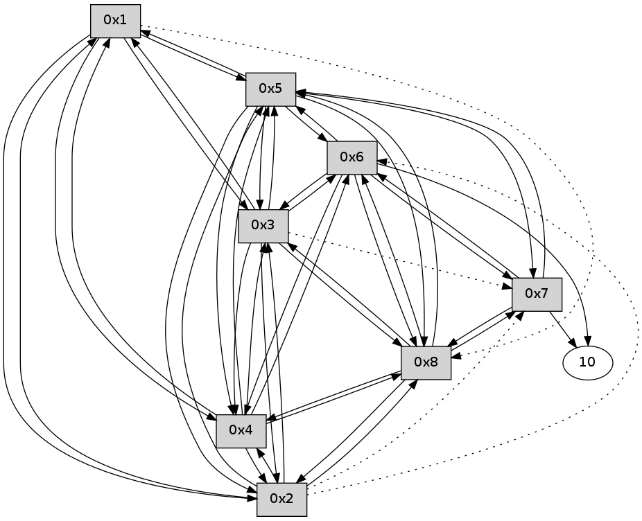

>> << IDX [start] -25 -5 +0 +5 +25 +100 [90.0000789165]
 Previous packets
----------------------------------------------------------------------
85.241130 beacon01(11f6) #0 coord=01,02,03,04,05,06,07,08,0a,09 cycle=688.0ms assoc
-- color-indic=0 64 8c 43
85.251303 beacon02(11f6) #0 coord=01,02,03,04,05,06,07,08,0a,09 cycle=688.0ms assoc 64 1f 72
85.261265 beacon03(11f6) #0 coord=01,02,03,04,05,06,07,08,0a,09 cycle=688.0ms assoc 64 65 3f
85.271265 beacon04(11f6) #0 coord=01,02,03,04,05,06,07,08,0a,09 cycle=688.0ms assoc 64 12 d5
85.281266 beacon05(11f6) #0 coord=01,02,03,04,05,06,07,08,0a,09 cycle=688.0ms assoc 64 68 98
85.291266 beacon06(11f6) #0 coord=01,02,03,04,05,06,07,08,0a,09 cycle=688.0ms assoc 64 e6 4f
85.301269 beacon07(11f6) #0 coord=01,02,03,04,05,06,07,08,0a,09 cycle=688.0ms assoc 64 9c 02
85.311269 beacon08(11f6) #0 coord=01,02,03,04,05,06,07,08,0a,09 cycle=688.0ms assoc 64 19 93
85.347142 [Hello(8): seq=1 sym=4 asym=2,7,5,6,3 sysInfo= stat=4:0,0,0,0/2:0,0,0,0/7:0,0,0,0/5:0,0,0,0/6:0,0,0,0/3:0,0,0,0]
85.350155 [Hello(6): seq=1 sym=3,8,4 asym=10,7,5 sysInfo= stat=3:0,0,0,0/8:0,0,0,0/4:0,0,0,0/10:0,0,0,0/7:0,0,0,0/5:0,0,0,0]
85.354805 [Hello(7): seq=1 sym=5,6,8 asym=10 sysInfo= stat=5:0,0,0,0/6:1,0,0,0/8:1,0,0,0/10:0,0,0,0]
85.364519 [Hello(2): seq=1 sym=5,3,8,4 asym=1,7 sysInfo= stat=5:0,0,0,0/3:0,0,0,0/8:1,0,0,0/4:0,0,0,0/1:1,0,0,0/7:1,0,0,0]
85.441832 [Hello(4): seq=1 sym=2,6,8 asym=1,5,3 sysInfo= stat=2:1,0,0,0/6:1,0,0,0/8:1,0,0,0/1:1,0,0,0/5:0,0,0,0/3:0,0,0,0]
85.479776 [Hello(3): seq=1 sym=1,2,6,8,4 asym=7,5 sysInfo= stat=1:1,0,0,0/2:1,0,0,0/6:1,0,0,0/8:1,0,0,0/4:1,0,0,0/7:1,0,0,0/5:0,0,0,0]
85.491443 [Hello(5): seq=1 sym=1,2,7,6,3,8,4 sysInfo= stat=1:1,0,0,0/2:1,0,0,0/7:1,0,0,0/6:1,0,0,0/3:1,0,0,0/8:1,0,0,0/4:1,0,0,0]
----------------------------------------------------------------------
86.029265 beacon01(11f6) #0 coord=01,02,03,04,05,06,07,08,0a,09 cycle=688.0ms assoc
-- color-indic=0 64 b8 5b
86.039424 beacon02(11f6) #0 coord=01,02,03,04,05,06,07,08,0a,09 cycle=688.0ms assoc 64 2b 6a
86.049400 beacon03(11f6) #0 coord=01,02,03,04,05,06,07,08,0a,09 cycle=688.0ms assoc 64 51 27
86.059400 beacon04(11f6) #0 coord=01,02,03,04,05,06,07,08,0a,09 cycle=688.0ms assoc 64 26 cd
86.069400 beacon05(11f6) #0 coord=01,02,03,04,05,06,07,08,0a,09 cycle=688.0ms assoc 64 5c 80
86.079402 beacon06(11f6) #0 coord=01,02,03,04,05,06,07,08,0a,09 cycle=688.0ms assoc 64 d2 57
86.089400 beacon07(11f6) #0 coord=01,02,03,04,05,06,07,08,0a,09 cycle=688.0ms assoc 64 a8 1a
86.099405 beacon08(11f6) #0 coord=01,02,03,04,05,06,07,08,0a,09 cycle=688.0ms assoc 64 2d 8b
86.261089 [Hello(1): seq=2 sym=5,3,2,4 asym=8 sysInfo= stat=5:1,0,0,0/3:1,0,0,0/2:0,0,0,0/4:0,0,0,0/8:1,0,0,0]
----------------------------------------------------------------------
86.817401 beacon01(11f6) #0 coord=01,02,03,04,05,06,07,08,0a,09 cycle=688.0ms assoc
-- color-indic=0 64 04 5e
86.827559 beacon02(11f6) #0 coord=01,02,03,04,05,06,07,08,0a,09 cycle=688.0ms assoc 64 97 6f
86.837535 beacon03(11f6) #0 coord=01,02,03,04,05,06,07,08,0a,09 cycle=688.0ms assoc 64 ed 22
86.847535 beacon04(11f6) #0 coord=01,02,03,04,05,06,07,08,0a,09 cycle=688.0ms assoc 64 9a c8
86.857536 beacon05(11f6) #0 coord=01,02,03,04,05,06,07,08,0a,09 cycle=688.0ms assoc 64 e0 85
86.867537 beacon06(11f6) #0 coord=01,02,03,04,05,06,07,08,0a,09 cycle=688.0ms assoc 64 6e 52
86.877537 beacon07(11f6) #0 coord=01,02,03,04,05,06,07,08,0a,09 cycle=688.0ms assoc 64 14 1f
86.887541 beacon08(11f6) #0 coord=01,02,03,04,05,06,07,08,0a,09 cycle=688.0ms assoc 64 91 8e
86.929494 [Hello(7): seq=2 sym=10,5,6,8 sysInfo= stat=10:1,0,0,0/5:1,0,0,0/6:1,0,0,0/8:1,0,0,0]
86.964114 [Hello(5): seq=2 sym=1,2,7,6,3,8,4 sysInfo= stat=1:2,0,0,0/2:1,0,0,0/7:2,0,0,0/6:1,0,0,0/3:1,0,0,0/8:1,0,0,0/4:1,0,0,0]
86.975043 [Hello(3): seq=2 sym=1,2,5,6,8,4 asym=7 sysInfo= stat=1:2,0,0,0/2:1,0,0,0/5:2,0,0,0/6:1,0,0,0/8:1,0,0,0/4:1,0,0,0/7:2,0,0,0]
87.012141 [Hello(2): seq=2 sym=1,5,3,8,4 asym=7 sysInfo= stat=1:2,0,0,0/5:2,0,0,0/3:2,0,0,0/8:1,0,0,0/4:1,0,0,0/7:2,0,0,0]
87.017227 [Hello(8): seq=2 sym=2,7,5,6,3,4 sysInfo= stat=2:1,0,0,0/7:2,0,0,0/5:2,0,0,0/6:1,0,0,0/3:2,0,0,0/4:1,0,0,0]
87.039061 [Hello(4): seq=2 sym=1,2,5,6,3,8 sysInfo= stat=1:2,0,0,0/2:2,0,0,0/5:2,0,0,0/6:1,0,0,0/3:2,0,0,0/8:2,0,0,0]
87.058979 [Hello(6): seq=2 sym=10,7,5,3,8,4 sysInfo= stat=10:2,0,0,0/7:2,0,0,0/5:2,0,0,0/3:2,0,0,0/8:2,0,0,0/4:2,0,0,0]
----------------------------------------------------------------------
87.605537 beacon01(11f6) #0 coord=01,02,03,04,05,06,07,08,0a,09 cycle=688.0ms assoc
-- color-indic=0 64 c0 50
87.615701 beacon02(11f6) #0 coord=01,02,03,04,05,06,07,08,0a,09 cycle=688.0ms assoc 64 53 61
87.625673 beacon03(11f6) #0 coord=01,02,03,04,05,06,07,08,0a,09 cycle=688.0ms assoc 64 29 2c
87.635671 beacon04(11f6) #0 coord=01,02,03,04,05,06,07,08,0a,09 cycle=688.0ms assoc 64 5e c6
87.645674 beacon05(11f6) #0 coord=01,02,03,04,05,06,07,08,0a,09 cycle=688.0ms assoc 64 24 8b
87.655674 beacon06(11f6) #0 coord=01,02,03,04,05,06,07,08,0a,09 cycle=688.0ms assoc 64 aa 5c
87.665673 beacon07(11f6) #0 coord=01,02,03,04,05,06,07,08,0a,09 cycle=688.0ms assoc 64 d0 11
87.675678 beacon08(11f6) #0 coord=01,02,03,04,05,06,07,08,0a,09 cycle=688.0ms assoc 64 55 80
87.725391 [Hello(1): seq=3 sym=5,3,2,4 asym=8 sysInfo= stat=5:2,0,0,0/3:2,0,0,0/2:1,0,0,0/4:1,0,0,0/8:2,0,0,0]
----------------------------------------------------------------------
88.393673 beacon01(11f6) #0 coord=01,02,03,04,05,06,07,08,0a,09 cycle=688.0ms assoc
-- color-indic=0 64 7c 55
88.403823 beacon02(11f6) #0 coord=01,02,03,04,05,06,07,08,0a,09 cycle=688.0ms assoc 64 ef 64
88.413807 beacon03(11f6) #0 coord=01,02,03,04,05,06,07,08,0a,09 cycle=688.0ms assoc 64 95 29
88.423807 beacon04(11f6) #0 coord=01,02,03,04,05,06,07,08,0a,09 cycle=688.0ms assoc 64 e2 c3
88.433808 beacon05(11f6) #0 coord=01,02,03,04,05,06,07,08,0a,09 cycle=688.0ms assoc 64 98 8e
88.443808 beacon06(11f6) #0 coord=01,02,03,04,05,06,07,08,0a,09 cycle=688.0ms assoc 64 16 59
88.453808 beacon07(11f6) #0 coord=01,02,03,04,05,06,07,08,0a,09 cycle=688.0ms assoc 64 6c 14
88.463812 beacon08(11f6) #0 coord=01,02,03,04,05,06,07,08,0a,09 cycle=688.0ms assoc 64 e9 85
88.520336 [Hello(5): seq=3 sym=1,2,7,6,3,8,4 sysInfo= stat=1:3,0,0,0/2:2,0,0,0/7:2,0,0,0/6:2,0,0,0/3:2,0,0,0/8:2,0,0,0/4:2,0,0,0]
88.535635 [Hello(6): seq=3 sym=10,7,5,3,8,4 sysInfo= stat=10:2,0,0,0/7:2,0,0,0/5:3,0,0,0/3:2,0,0,0/8:2,0,0,0/4:2,0,0,0]
88.539540 [Hello(4): seq=3 sym=1,2,5,6,3,8 sysInfo= stat=1:3,0,0,0/2:2,0,0,0/5:3,0,0,0/6:2,0,0,0/3:2,0,0,0/8:2,0,0,0]
88.561646 [Hello(7): seq=3 sym=10,5,6,8 sysInfo= stat=10:2,0,0,0/5:3,0,0,0/6:3,0,0,0/8:2,0,0,0]
88.566277 [Hello(8): seq=3 sym=2,7,5,6,3,4 sysInfo= stat=2:2,0,0,0/7:2,0,0,0/5:3,0,0,0/6:3,0,0,0/3:2,0,0,0/4:3,0,0,0]
88.600747 [Hello(2): seq=3 sym=1,5,3,8,4 asym=7,6 sysInfo= stat=1:3,0,0,0/5:3,0,0,0/3:2,0,0,0/8:3,0,0,0/4:3,0,0,0/7:3,0,0,0/6:1,0,0,0]
88.646998 [Hello(3): seq=3 sym=1,2,5,6,8,4 asym=7 sysInfo= stat=1:3,0,0,0/2:3,0,0,0/5:3,0,0,0/6:3,0,0,0/8:3,0,0,0/4:3,0,0,0/7:3,0,0,0]
----------------------------------------------------------------------
89.181808 beacon01(11f6) #0 coord=01,02,03,04,05,06,07,08,0a,09 cycle=688.0ms assoc
-- color-indic=0 64 a8 60
89.191969 beacon02(11f6) #0 coord=01,02,03,04,05,06,07,08,0a,09 cycle=688.0ms assoc 64 3b 51
89.201942 beacon03(11f6) #0 coord=01,02,03,04,05,06,07,08,0a,09 cycle=688.0ms assoc 64 41 1c
89.211943 beacon04(11f6) #0 coord=01,02,03,04,05,06,07,08,0a,09 cycle=688.0ms assoc 64 36 f6
89.221943 beacon05(11f6) #0 coord=01,02,03,04,05,06,07,08,0a,09 cycle=688.0ms assoc 64 4c bb
89.231943 beacon06(11f6) #0 coord=01,02,03,04,05,06,07,08,0a,09 cycle=688.0ms assoc 64 c2 6c
89.241944 beacon07(11f6) #0 coord=01,02,03,04,05,06,07,08,0a,09 cycle=688.0ms assoc 64 b8 21
89.251948 beacon08(11f6) #0 coord=01,02,03,04,05,06,07,08,0a,09 cycle=688.0ms assoc 64 3d b0
89.307665 [Hello(1): seq=4 sym=5,3,2,4 asym=8 sysInfo= stat=5:3,0,0,0/3:3,0,0,0/2:2,0,0,0/4:2,0,0,0/8:3,0,0,0]
----------------------------------------------------------------------
89.969944 beacon01(11f6) #0 coord=01,02,03,04,05,06,07,08,0a,09 cycle=688.0ms assoc
-- color-indic=0 64 14 65
89.980091 beacon02(11f6) #0 coord=01,02,03,04,05,06,07,08,0a,09 cycle=688.0ms assoc 64 87 54
89.990080 beacon03(11f6) #0 coord=01,02,03,04,05,06,07,08,0a,09 cycle=688.0ms assoc 64 fd 19